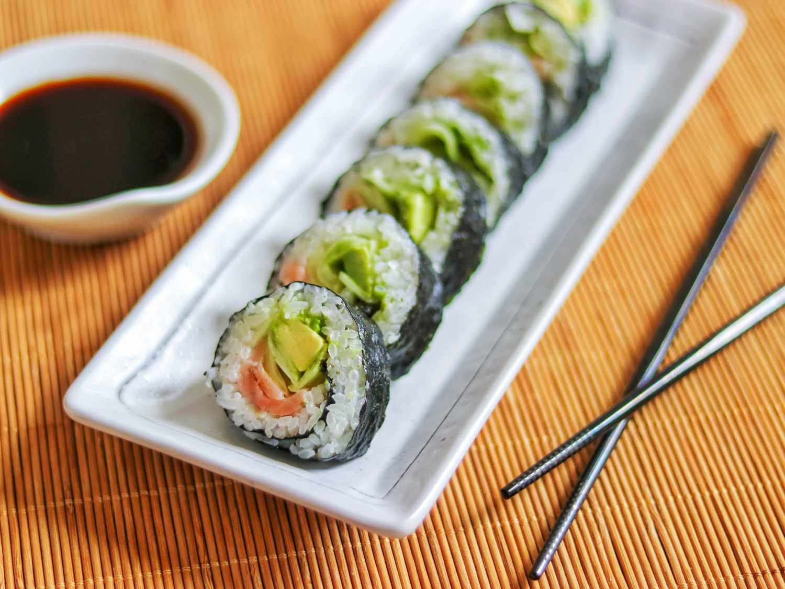

Lasagna

Description
Sushi is a traditional Japanese dish that typically consists of vinegared rice combined with various ingredients, such as seafood (like raw fish, shrimp, or squid), vegetables (like cucumber or avocado), and sometimes tropical fruits.
Ingredients
Steps
- Cook sushi rice according to package instructions.
- Prepare your choice of fillings such as fish, vegetables, or tofu.
- Place a sheet of nori (seaweed) on a bamboo sushi mat or plastic wrap.
- Spread a layer of sushi rice evenly over the nori, leaving a small border at the top.
- Add your desired fillings in a line along the bottom edge of the rice.
- Roll the sushi tightly using the bamboo mat, applying gentle pressure as you roll.
- Once rolled, use a sharp knife to slice the sushi roll into individual pieces.
- Repeat the process with the remaining ingredients.
- Serve the sushi with soy sauce, wasabi, and pickled ginger.